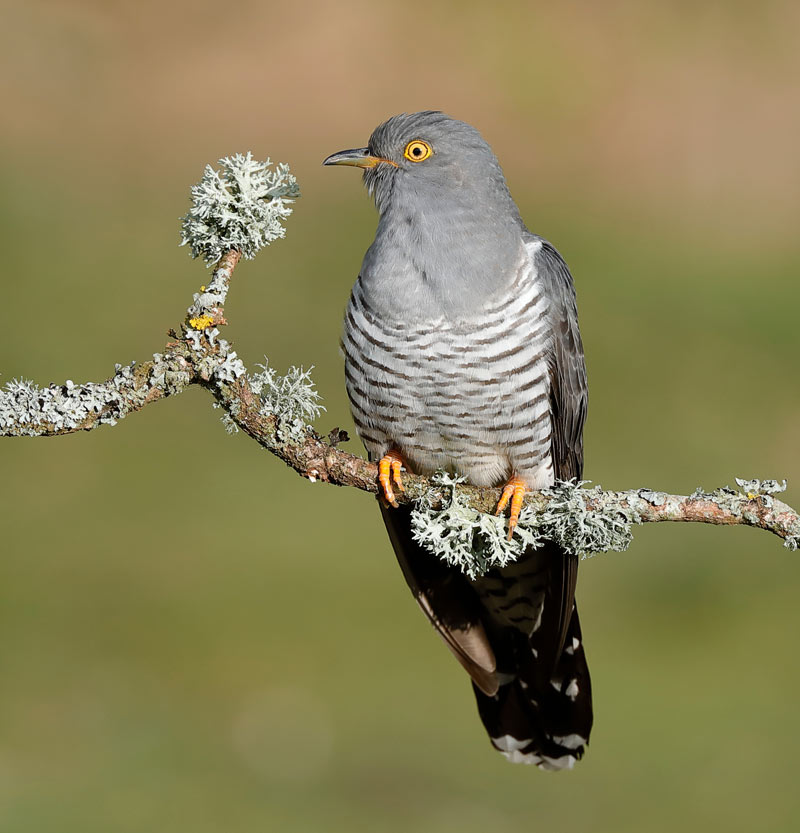

الوقواقCommon Cuckoo
Cuculus canorus
مهاجرMigratory
يُعرف الوقواق علميًا باسم Cuculus canorus، وينتمي إلى فصيلة الوقواقيات (Cuculidae) ضمن رتبة الوقواقاويات (Cuculiformes)، وهو طائر نحيل ذو ريش رمادي على الرأس والظهر وبطن أبيض مخطط بخطوط أفقية داكنة تشبه شكل جارح صغير، وذيل طويل، ويشتهر صوته الشائع بالنداء ثنائي المقطع الذي أعطاه اسمه المعروف عالميًا. هذا الطائر مهاجر (M) في العراق، إذ يعبره خلال هجرته بين مناطق تكاثره الواسعة في أوراسيا ومناطق تشتيته في أفريقيا، ويعيش في المناطق الزراعية والأشجار المتفرقة والبساتين أثناء عبوره.
The Common Cuckoo is scientifically known as Cuculus canorus, belonging to the cuckoo family (Cuculidae) within the order Cuculiformes. It is a slender bird with gray plumage on the head and back and a white belly barred with dark horizontal stripes resembling a small raptor, and a long tail, known for its famous two-note call that gave it its globally recognized name. This bird is migratory (M) in Iraq, passing through during its migration between its wide breeding grounds across Eurasia and its wintering grounds in Africa, living in agricultural areas, scattered trees, and orchards during its passage.
يصنَّف الوقواق ضمن الأنواع غير المهددة (Least Concern) وفق الاتحاد الدولي لحفظ الطبيعة، بفضل انتشاره الواسع جدًا عبر أوراسيا. ويسهم الوقواق أثناء عبوره العراق في تغذيته على اليرقات الشعرية الكبيرة السامة التي تتجنبها معظم الطيور الأخرى، ما يجعله من أهم منظمات أعداد هذه اليرقات الضارة للنباتات، ويشتهر بسلوكه التطفلي الشهير في وضع بيضه في أعشاش طيور مضيفة أصغر لتربية صغاره، وهو من أكثر السلوكيات دراسة في علم الطيور.
The Common Cuckoo is classified as Least Concern by the IUCN, thanks to its very wide distribution across Eurasia. During its passage through Iraq, it feeds on large toxic hairy caterpillars that most other birds avoid, making it one of the most important regulators of these plant-damaging caterpillar populations, and it is famous for its well-known brood-parasitic behavior of laying its eggs in the nests of smaller host birds to raise its young, one of the most extensively studied behaviors in ornithology.